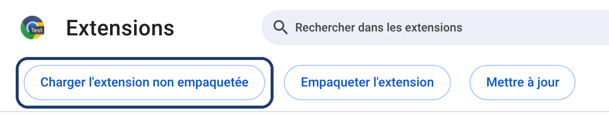
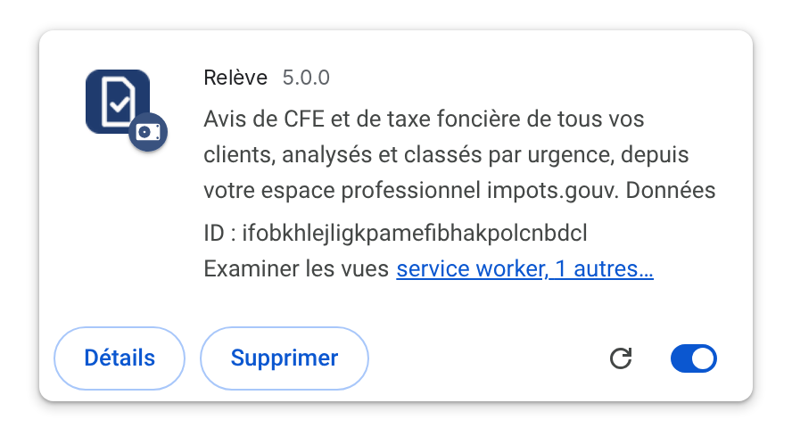
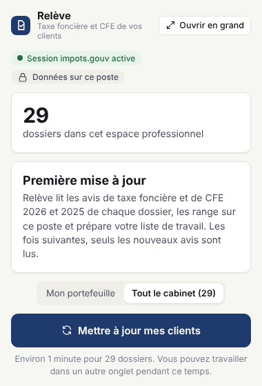
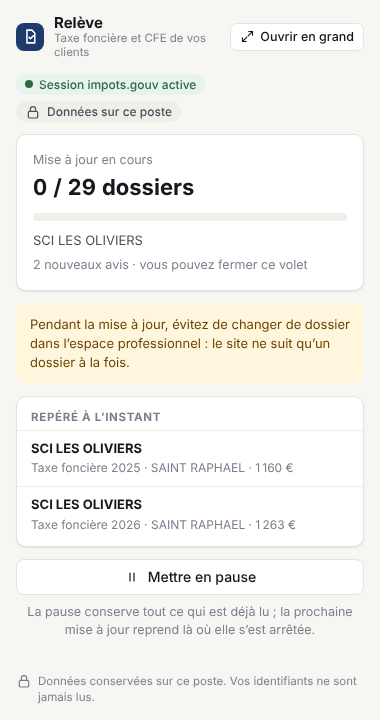
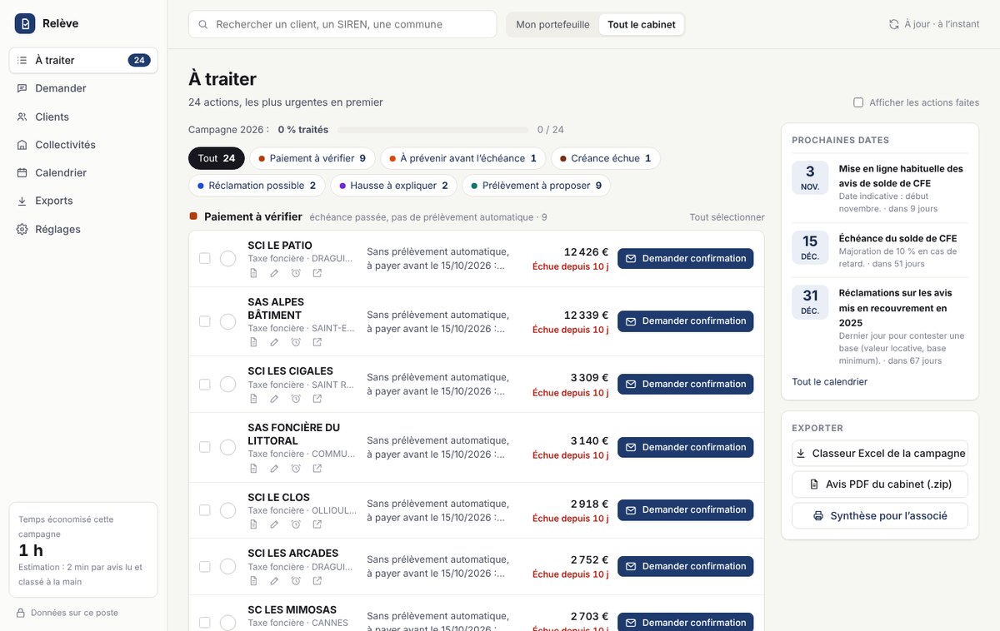
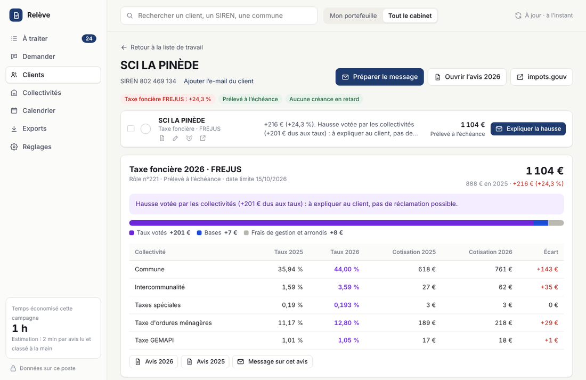
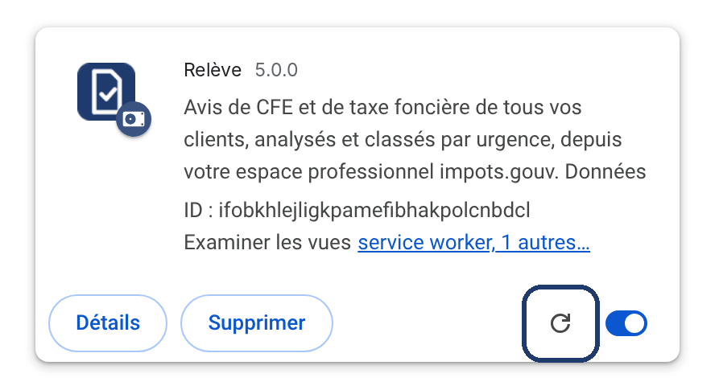

Installation une seule fois, en 3 minutes. Ensuite, un clic suffit.
Il arrive dans votre dossier Téléchargements.
Dans Téléchargements, faites un clic droit sur Releve.zip, puis Extraire tout…
Cliquez sur Parcourir…, choisissez Documents, puis Extraire.
Vous obtenez le dossier Documents › Releve.
Sur Mac : double-cliquez sur le fichier, puis glissez le dossier Releve dans Documents.
Copiez cette adresse dans la barre d’adresse du navigateur, puis appuyez sur Entrée :
chrome://extensions
Avec Edge : edge://extensions
L’interrupteur est en haut à droite (dans Edge : dans la colonne de gauche).
Ce nom technique veut seulement dire « installer une extension depuis un dossier ».
Choisissez le dossier Documents › Releve, puis Sélectionner un dossier.

Dans Edge, le bouton s’appelle « Charger l’élément décompressé ».
La carte Relève apparaît. C’est installé.

Cliquez sur l’icône en forme de pièce de puzzle à droite de la barre d’adresse, puis sur la punaise à côté de Relève.
Dans Edge : puzzle, puis l’icône en forme d’œil.
L’icône bleue reste visible en haut à droite.
Comme d’habitude. Vous saisissez vous-même vos identifiants.
Un volet s’ouvre à droite. Choisissez Mon portefeuille ou Tout le cabinet, puis lancez.


Dans le volet, cliquez sur Ouvrir en grand (en haut à droite) ou sur le logo Relève : l’application complète s’ouvre dans un onglet. Les actions sont classées par urgence. Pour chacune : un bouton (prévenir le client, expliquer la hausse…), une case Fait, et Plus tard.

Sous chaque nom, quatre petites icônes : ouvrir l’avis, ajouter une note (« client appelé le 12/11 »), reporter de 7 jours, ouvrir le dossier directement sur impots.gouv.
Cliquez sur un nom pour ouvrir la fiche du client : l’explication de la hausse, collectivité par collectivité, le contrôle de la CFE et vos notes.

« Préparer le message » télécharge un brouillon : cliquez dessus en bas du navigateur, il s’ouvre dans Outlook avec l’avis joint. Rien n’est envoyé sans vous.
Données fictives sur les captures.
Dans Réglages, importez le fichier des dossiers du cabinet (export CSV avec SIREN, code dossier, collaborateur, e-mail) et choisissez votre nom, ou collez simplement la liste de vos SIREN. Les e-mails des clients sont alors préremplis dans les messages.
Importez un fichier (Excel ou CSV) avec, par client : SIREN, date de clôture, durée en mois, chiffre d’affaires HT, et si possible la date de création. Relève signale les clients imposés à tort (CA ≤ 5 000 €, base au-dessus du plafond de la tranche, CFE l’année de création) et prépare le brouillon de réclamation. Un modèle de fichier est proposé dans Réglages.
Les clients ni prélevés ni mensualisés deux années de suite apparaissent dans « Prélèvement à proposer », avec un message prêt pour les inciter à adhérer : autant de relances en moins l’an prochain.
Pour une hausse de bases de taxe foncière ou une base minimum de CFE contestable, « Préparer la réclamation » rédige le courrier chiffré. Vous le relisez, le complétez et le déposez vous-même par la messagerie sécurisée.
Une notification vous prévient 7 jours et la veille d’une échéance, quand les avis de solde de CFE sont attendus et à la fin d’une longue mise à jour. Sur impots.gouv, un petit bandeau signale les actions en attente du dossier consulté. Les deux se désactivent dans Réglages.
Dans l’application Relève, ouvrez Demander et cliquez une question : « À prévenir sous 7 jours », « Créances échues », « Plus fortes hausses », « Bilan de la campagne »… Affinez si besoin avec les filtres (taxe, commune, collaborateur, échéance, montant mini). La réponse affiche les clients concernés avec les boutons habituels : préparer le message, marquer fait, ouvrir sur impots.gouv.
Les résultats sont calculés sur votre poste à partir des avis lus : ils sont exacts et rien n’est envoyé.
« Lire mes habilitations » (environ 30 secondes) affiche, pour chaque dossier, les services auxquels votre compte a accès, votre rôle (titulaire, suppléant, délégant, acteur) et leur état. Filtres par service, rôle, état et collaborateur. Pour un service, « Dossiers SANS ce service » liste ceux où il manque (jamais attribué, supprimé ou en veille) ; à droite, le décompte avec / sans de chaque service. « Exporter la sélection » produit un fichier Excel de ce qui est affiché, filtres compris ; « Tout exporter » ajoute la matrice dossiers × services. Toute la liste s’affiche, sans limite de nombre. Relève lit la page « Gérer mon espace › Consulter mes services » et ne modifie rien : pour changer une habilitation, passez par impots.gouv.
Avec le fichier des dossiers importé dans Réglages, Relève liste les clients absents de votre espace (ou sans accès au compte fiscal), souvent parce qu’ils ont leur propre espace. Pour chacun, un message prêt leur explique comment désigner le cabinet comme administrateur suppléant avec votre numéro d’abonné ; le suivi indique « demandé », « à relancer » après 7 jours, puis « raccordé » dès que le dossier apparaît.
Le numéro d’abonné du cabinet est lu automatiquement avec les habilitations ; vous pouvez le corriger en haut de la liste « Clients à raccorder ». Relève ne demande ni ne conserve jamais les identifiants de vos clients.
Si vous avez l’application Claude sur votre ordinateur, vous pouvez interroger Relève en langage courant : « quels clients doivent payer avant le 15/12 sans prélèvement ? », « explique-moi la hausse de la SCI Les Pins et prépare le message », « marque comme faits les rappels envoyés ce matin ».
Télécharger le connecteur pour Claude
Double-cliquez sur le fichier Releve-Claude.mcpb : l’application Claude s’ouvre et propose de l’installer. Cliquez sur Installer. (Sinon : Claude › Paramètres › Extensions, puis glissez le fichier.)
Réglages › Connexion à Claude : cochez « Activer la connexion à Claude sur ce poste ». L’état passe à « Connecté à Claude » en moins d’une minute.
Laissez Chrome (ou Edge) ouvert. Commencez par exemple par « Relève : fais-moi le point sur la campagne ».
Claude prépare des brouillons ; il n’envoie rien, ne paie rien et ne touche pas au site des impôts. Pour créer un brouillon Outlook avec les avis joints, il ouvre la fenêtre de message de Relève et vous validez.
Avec les noms masqués, Claude ne voit que « Client 4F2A ». Il envoie sa réponse dans Relève, menu Demander › Réponses de Claude, qui s’ouvre tout seul : les pseudonymes y sont remplacés par les vrais noms, sur votre poste, et chaque nom ouvre la fiche du client. Si Claude oublie, copiez sa réponse et collez-la dans « Coller une réponse de Claude ».
Un bandeau bleu « Nouvelle version disponible » apparaît dans le volet. Vos données sont conservées.
Bouton Télécharger du bandeau, ou ce lien.
Clic droit, Extraire tout…, Parcourir…, Documents, Extraire, puis Remplacer les fichiers.
Dans chrome://extensions, cliquez sur la flèche circulaire de la carte Relève.

Vous avez choisi le mauvais dossier. Ouvrez les dossiers Releve jusqu’à voir un fichier nommé manifest.json : c’est ce dossier-là qu’il faut sélectionner.
Fermez simplement le message (croix ou « Annuler »). Il concerne les extensions installées depuis un dossier, comme celle-ci.
Certains postes gérés par un service informatique le bloquent. Dans ce cas, votre prestataire peut installer Relève sur tous les postes du cabinet en une seule opération : transmettez-lui cette page.
Uniquement dans le navigateur de votre poste. Aucun serveur ne reçoit vos avis ni vos analyses. Le seul échange avec ce site est la vérification d’une nouvelle version (aucune donnée envoyée). Détails : confidentialité.
Elle lit trois pages de votre espace : avis de CFE, avis de taxe foncière et situation de la dette fiscale, dossier par dossier, comme vous le feriez à la main. Elle ne paie rien, n’envoie aucun message, ne touche pas à la messagerie et ne modifie rien.
De deux pages de l’espace professionnel : Compte fiscal › Synthèses › Dettes fiscales (soldes non réglés, CFE, prélèvement à la source…) et Payer › Dette fiscale (avis de mise en recouvrement : pénalités, majorations, rappels). Relève lit seulement la liste des documents à payer : il ne lance aucun paiement. Les reliquats de quelques centimes sont ignorés (seuil réglable dans Réglages).
Le site des impôts déconnecte après un moment. Reconnectez-vous et relancez : les avis déjà lus ne sont pas relus.
Chacun installe l’extension sur son poste et choisit « Mon portefeuille ». Les données ne sont pas partagées entre postes.
Vérifiez que Chrome (ou Edge) est ouvert, que l’extension est à jour et que « Connexion à Claude » est cochée dans ses Réglages. La liaison se rétablit seule en moins d’une minute. Si deux fenêtres de l’application Claude sont ouvertes, fermez-en une.
Réglages › Sauvegarde › « Sauvegarder mes données » enregistre un fichier Releve-sauvegarde-AAAA-MM-JJ.json avec vos actions faites ou reportées, vos notes, vos réglages, le fichier des dossiers, les chiffres d’affaires et les réponses de Claude. Sur le nouveau poste (ou après une réinstallation), « Restaurer une sauvegarde… » les remet, puis une mise à jour relit les avis. Faites-le avant toute réinstallation : désinstaller l’extension efface tout.
Oui, sous licence libre EUPL 1.2 : github.com/rfroment85/releve. Vous pouvez le lire, l’adapter à votre cabinet et proposer des améliorations. Seule la version téléchargée sur ce site est la version officielle.
Dans chrome://extensions, « Supprimer » sur la carte Relève, puis supprimez le dossier Documents › Releve. Les données sont effacées avec l’extension.